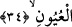
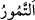
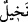

Bunların hepsi senin için avare olmuş, sana itâat ediyor
Sen Allah’a minnet etmezsen insafa sığmaz yaptığın
Allah Teâlâ’nın nimetine tâzim göstermek için küçük bile olsa ekmek parçalarını ve
kırıntılarını yerden almak ekmeğe saygıdandır. Bir hadîste şöyle buyrulmuştur: “Kim
sofradan yere düşen şeyi alıp yerse bolluk içinde yaşar. Çocukları ve çocuklarının
çocukları ahmaklıktan âfiyet bulur.”[133] Nitekim Ravzatu’l-ahyâr’da böyle
geçmektedir. Ekmek kırıntılarını toplayıp yemenin iri gözlü hurilerin mehirleri olduğu
söylenmiştir. Ekmeğe katık olarak yenilen şeyler dışında ekmeğin üzerine kap kacak ve
başka şeyler konulmaz. Parmakları ve bıçağı ekmeğe silmek mekruhtur. Ancak sildikten
sonra o ekmeği yerse o başka. Kezâ düz durması için yemek kabının yanına ekmek
koymak mekruhtur. Yine ekmeğin yüzünü veya içini yemek ve kalanı atmak mekruhtur.
Çünkü bütün bunlarda ekmeği hafife alma vardır. Ekmeği hafife almak ise pahalılık,
kıtlık ve fakirlik getirir. en-Nikâye şerhinde ve el-Avârif’te böyle geçmektedir.
34. Biz, yeryüzünde nice nice hurma bahçeleri, üzüm bağları yarattık ve oralarda
birçok pınarlar fışkırttık.
“Biz, yeryüzünde” hurma ve üzüm çeşitlerinden “nice nice hurma bahçeleri, üzüm
bağları yarattık.” Hurma ve üzüm çeşitleri kasdedildiğinden hurma bahçeleri ve üzüm
bağları çoğul yapılmıştır. (Önceki âyetteki) “dane” kelimesi ise tekil yapılmıştır. Çünkü
cins mânâsına delâlet eden bir isim farklılık mânâsını da bildirir. Türlere delâlet eden
isim ise böyle değildir.
Eğer “Neden hurmalar (
) değil de hurma ağaçları (
) zikredilmiştir? Hurmalar
zikredilse yenilen şeyler olması konusunda dane ve üzümlere uygun olurdu. Çünkü dane
ve üzümlerin tamamı yenir, hurma ağacı ise böyle değildir.” diye sorarsan şöyle cevap
veririm: Çünkü hurma ağacının bir çok faydaları ve Allah Teâlâ’nın san’atının
eserlerine sahiptir. Hurma ağacı yeryüzünde yetişen ilk ağaçtır. Hurma ağacı bizim
halamızdır. Çünkü Âdem (a.s.)’ın yaratıldığı çamurun arta kalanından yaratılmıştır.
Boyunun düz ve uzun olması, bitkiler arasında özel bir yeri olması ve aşılanma
bakımından insana benzer. Hurma ağacının tomurcuğunun kokusu meni kokusu gibidir.
Hurmanın tomurcuğunun anne karınındaki çocuğun içinde bulunduğu kılıf gibi bir
koruma zarı vardır. Hurma ağacının başı kesilirse ölür/kurur. Nitekim derler ki: Cansız
varlıkların bitkilere en yakın olanı mercandır. Çünkü o bitki gibi denizde biter ve
dalları olur. Bitkilerin hayvanlara en yakın olanı ise hurma ağacıdır. Çünkü hurma